Lesen · Sammeln · Auswerten
Finnvelo Lesezeit
In EntwicklungFinnvelo Lesezeit ist ein Lesetagebuch für Android. Bücher und Hörbücher legst du per Suche in sieben Quellen oder per ISBN-Scan in Sekunden an – mit Cover und Klappentext. Danach zeigt die App, was auf dem Stapel wartet, was du gelesen hast und wie sich dein Lesejahr entwickelt.
Beschreibung
Die App ist aufgebaut wie ein Buch: Du blätterst zwischen vier Seiten – der Übersicht, dem SuB (dem Stapel ungelesener Bücher), dem Tagebuch mit allem, was du gelesen oder gehört hast, und der Auswertung. Wer viele Reihen liest, schaltet eine fünfte Seite „Reihen“ dazu: Sie zeigt jede Buchreihe Band für Band mit Cover und Stand – und verrät, welcher Band noch fehlt.
Ein neues Buch ist schnell angelegt: Titel, Autor oder ISBN eintippen, und die App fragt sieben Quellen gleichzeitig ab – die Deutsche Nationalbibliothek, den Verbundkatalog K10plus, Google Books, Apple Books, Open Library, Wikidata und für Hörbücher Audible. Ein Tipp auf den Treffer übernimmt Titel, Autor, Verlag, Seitenzahl, Reihe und Cover. Auf Wunsch liest die Handykamera den Strichcode auf der Rückseite des Buches.
Für jedes Buch hältst du fest, was dir wichtig ist: das Format vom gebundenen Buch über Taschenbuch, Comic und E-Book bis zum Hörbuch (E-Books und Hörbücher auch aus der Onleihe), Genre, Reihe und Band, wann es auf den SuB gekommen ist, woher es stammt – gekauft, geschenkt, geliehen oder aus dem Bücherschrank – und wo es geblieben ist. Ist ein Buch ausgelesen, trägst du Anfang und Ende ein, die App zählt die Lesetage, und du vergibst bis zu fünf Sterne. Halbe Sterne zählen auch.
Bei Hörbüchern spricht die App von „hören“ statt „lesen“, führt die Spieldauer statt der Seitenzahl und merkt sich, wer liest. Bücher und Hörbücher werden in Übersicht und Auswertung getrennt gezählt.
Kannst du dich nicht entscheiden, was als Nächstes drankommt, würfelt die App ein Buch aus deinem Stapel aus. Den Vorschlag legst du direkt auf „Lese ich gerade“ oder in die SuB-Abbau-Challenge – die Liste der Bücher, die du dir als Nächstes vorgenommen hast.
Alles bleibt auf deinem Handy: kein Konto, keine Anmeldung, keine Werbung. Ins Netz geht die App nur, wenn du suchst oder fehlende Klappentexte nachholst, und – abschaltbar – um nach einer neuen Fassung zu sehen.
Bücher in Sekunden anlegen
Suche in sieben Quellen gleichzeitig oder ISBN per Kamera einlesen – Cover, Verlag, Seitenzahl und Reihe kommen gleich mit.
Den SuB im Blick
Der Stapel ungelesener Bücher, geordnet nach dem Jahr, in dem sie dazukamen – samt SuB-Abbau-Challenge für die nächsten Vorhaben.
Tagebuch und Bewertung
Alles Gelesene und Gehörte nach Monaten, mit Lesezeitraum, Lesetagen und Sternen in halben Schritten. Jeden Lesemonat kannst du als Bild teilen.
Auswertung
Bücher und Seiten je Monat und Jahr, dazu die Summe über alle Jahre – Bücher und Hörbücher getrennt, abgebrochene auf Wunsch in eigener Reihe.
Alle Formate
Gebunden, broschiert, Taschenbuch, Comic, E-Book und Hörbuch – E-Books und Hörbücher auch aus der Onleihe.
Buchreihen
Reihen mit Bandnummer erfassen. Die Seite „Reihen“ zeigt jede Reihe Band für Band und meldet Lücken.
Der Würfel entscheidet
Ein Zufallsbuch aus dem SuB – mit kurzer Würfelanimation oder auf Wunsch sofort.
Verzeichnisse
Gemerkte Autoren, 121 Verlage, deine Reihen und 25 Genres stehen beim Tippen bereit. Umbenennen wirkt auf alle Bücher.
Suchen und Ordnen
Lupe für die Suche im Bestand, Ordnen nach Reihe, Genre, Autor, Verlag, Format oder Jahr und Wechsel zwischen Covern und Liste.
Eigene Gestaltung
Hell, dunkel oder wie das Gerät, 30 Hintergrundmotive oder ein eigenes Bild, dazu Farbräder für Hintergrund, Menüband und Schrift.
Besitz und Verbleib
Woher ein Buch kam und wo es geblieben ist – behalten, verkauft, verschenkt oder zurückgegeben.
Papierkorb und Sicherung
Gelöschtes bleibt 14 Tage im Papierkorb. Die Sicherung packt den ganzen Bestand samt Covern in eine Datei.
Oberfläche
Die folgenden Ansichten zeigen die App mit einem Beispielbestand aus elf aktuellen Büchern und einem Hörbuch. Ein Klick auf ein Bild öffnet es groß.
Lesen, sammeln, auswerten
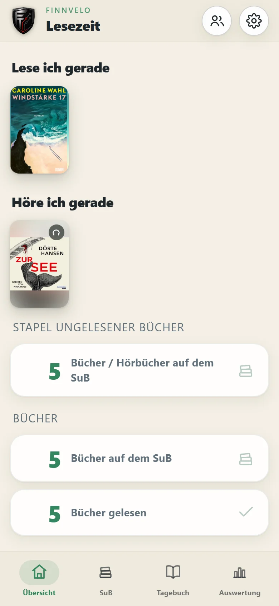
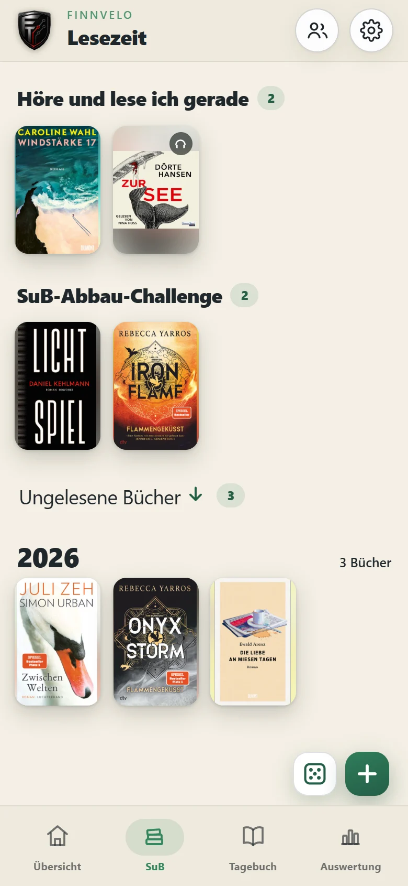
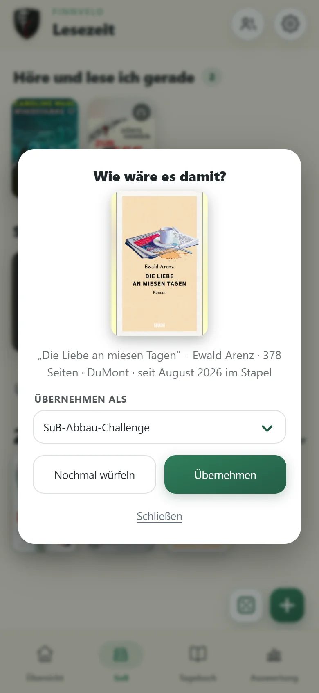
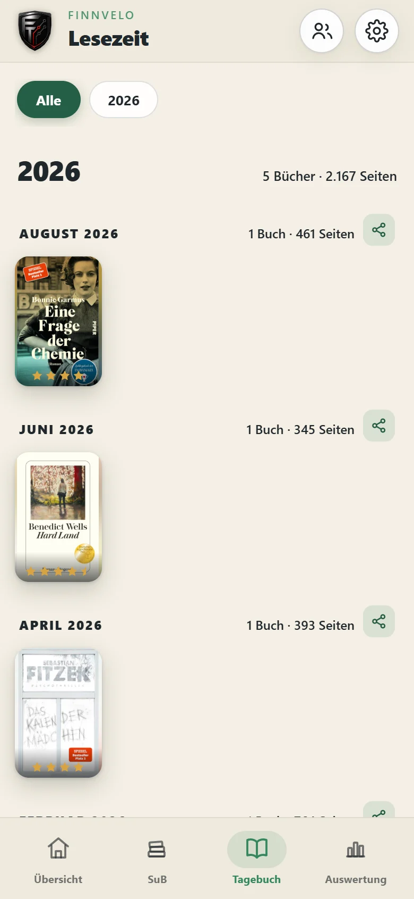
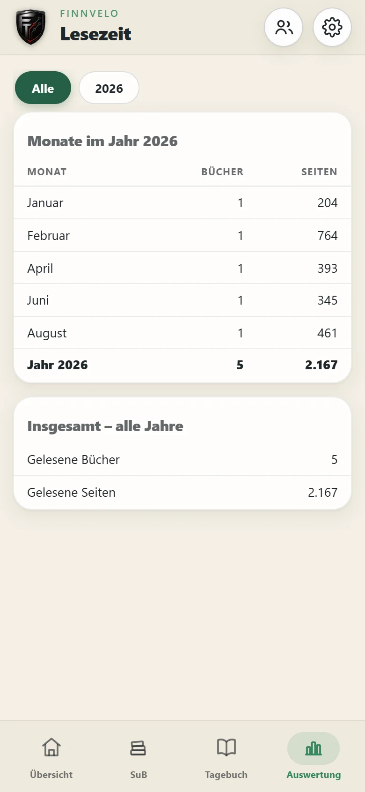
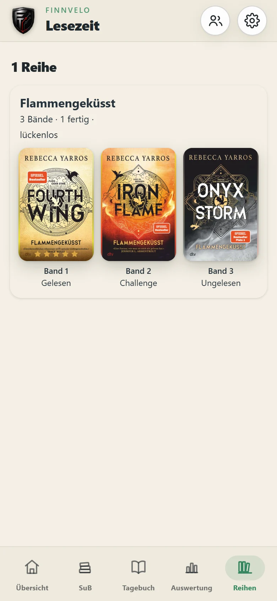
Bücher erfassen und pflegen
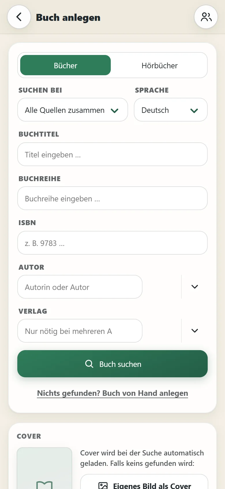
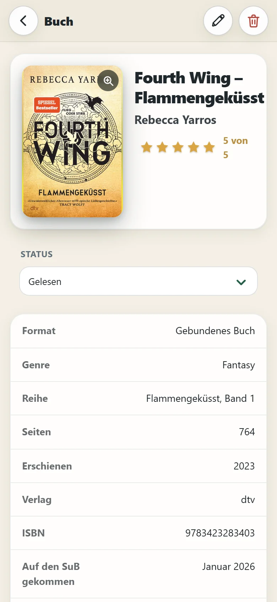
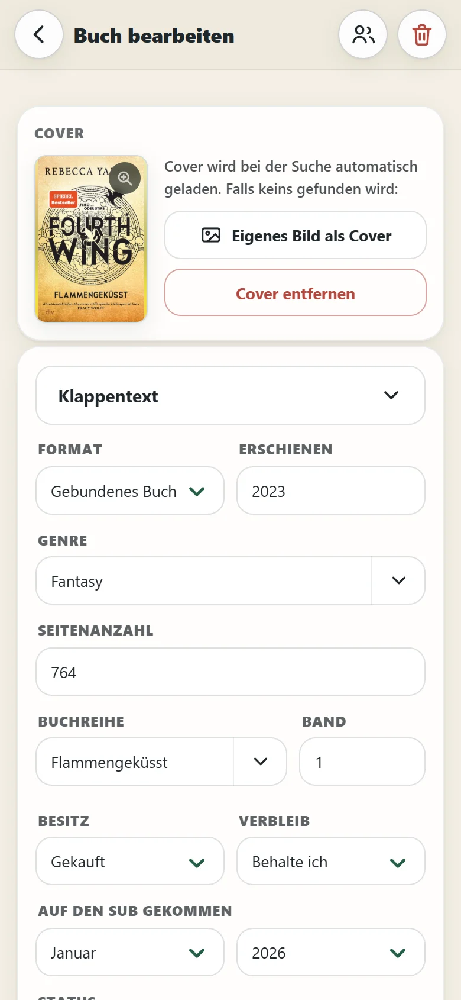
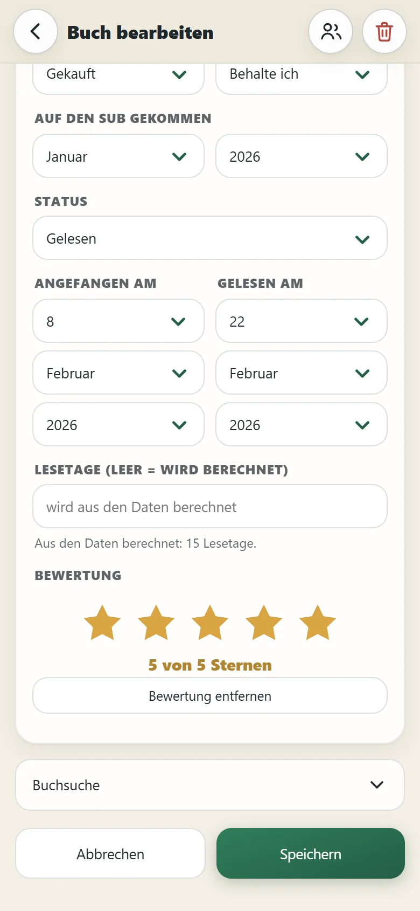
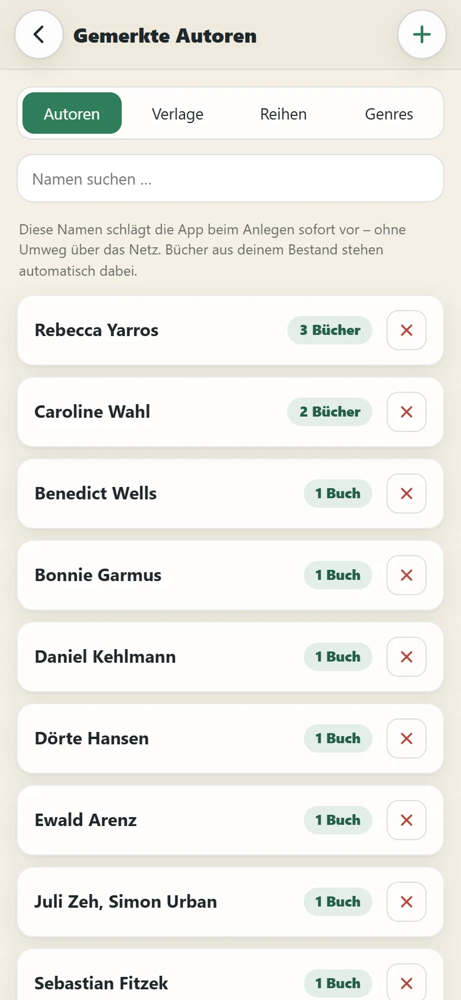
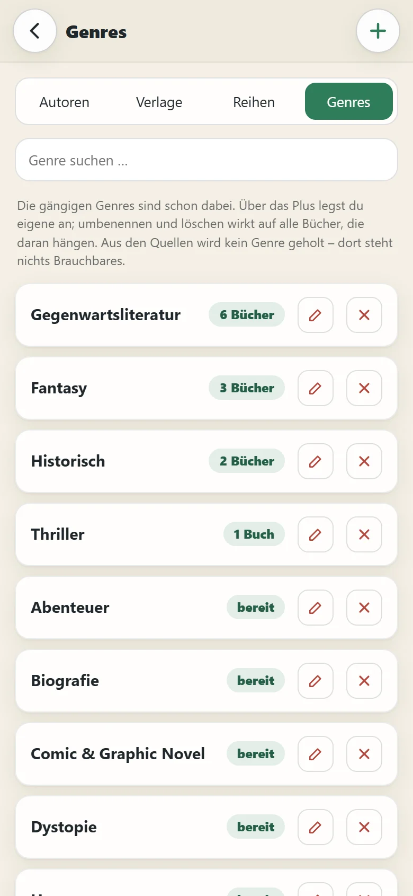
Einstellungen und Aussehen
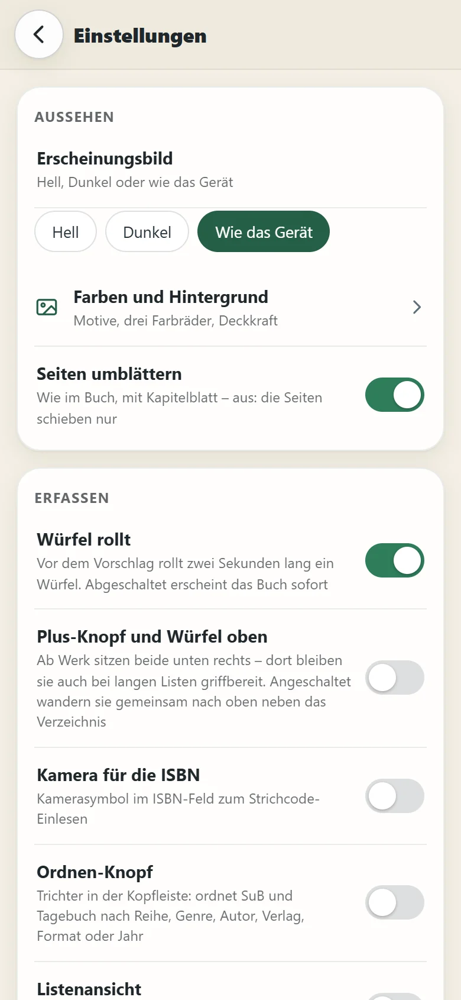
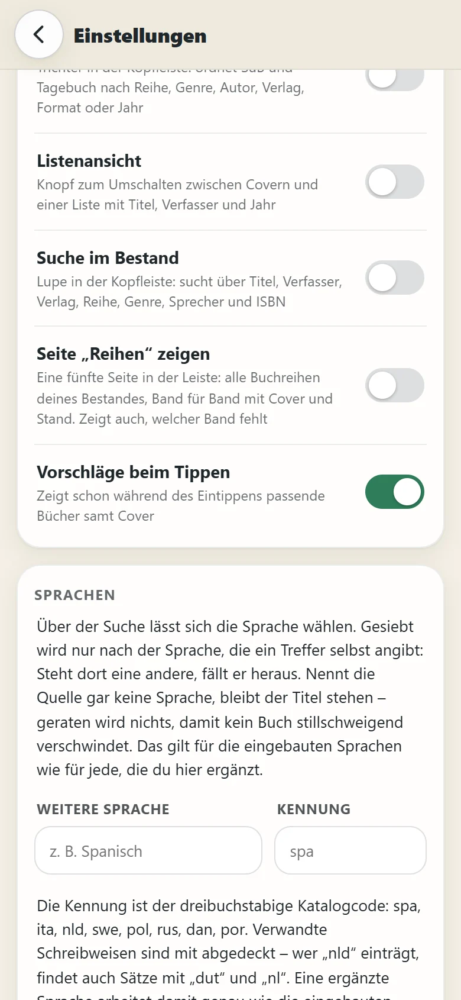
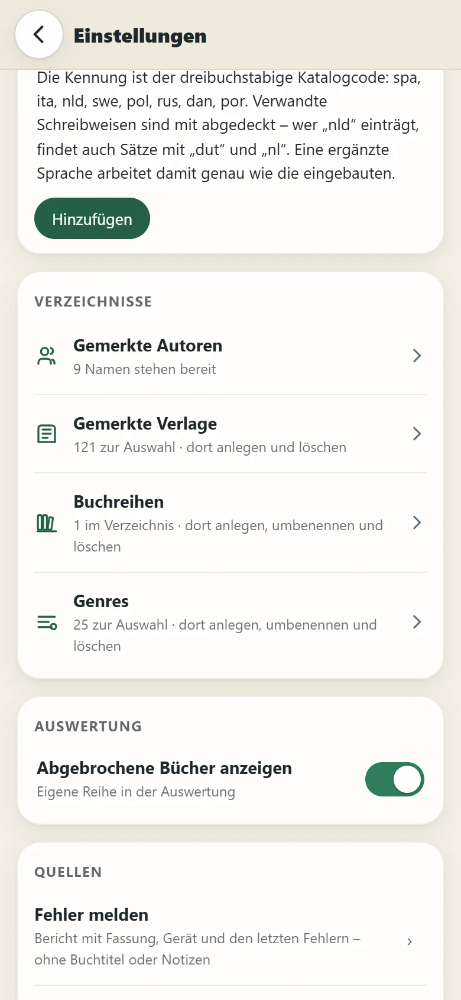
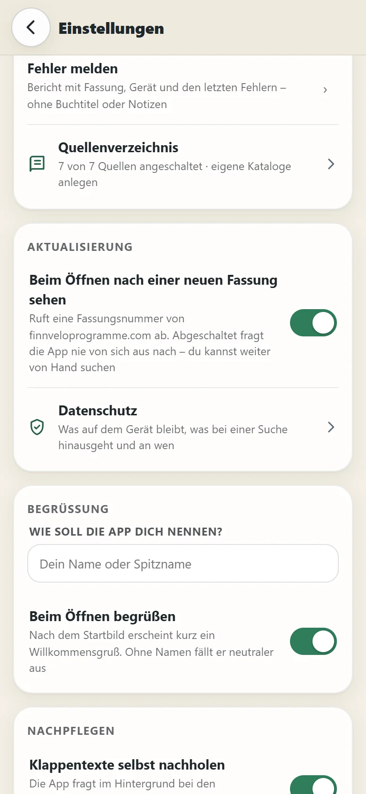
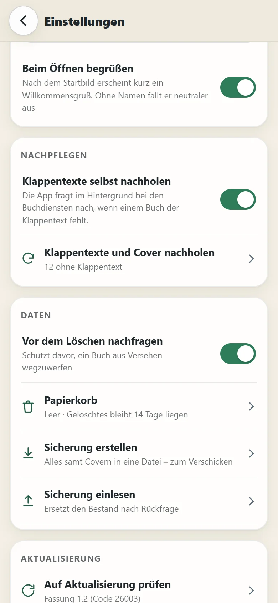
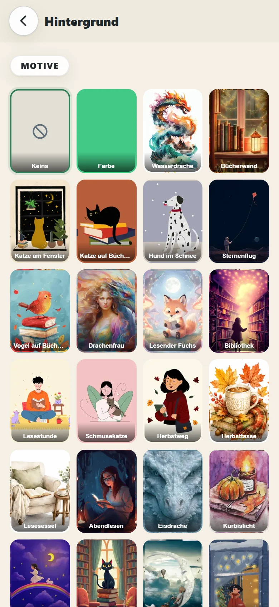
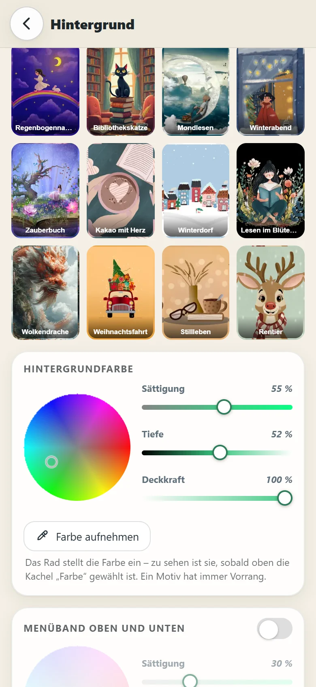
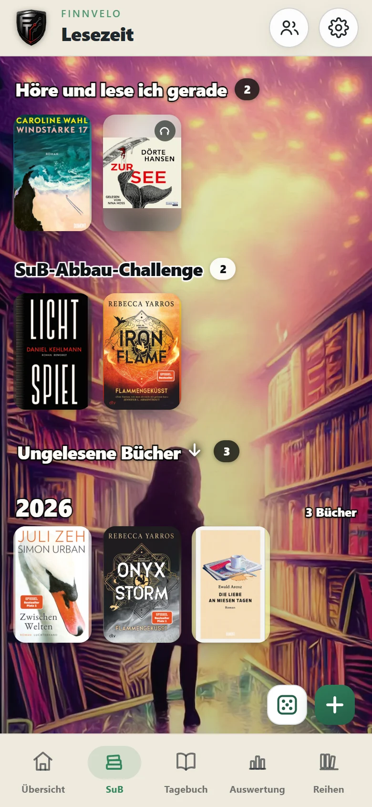
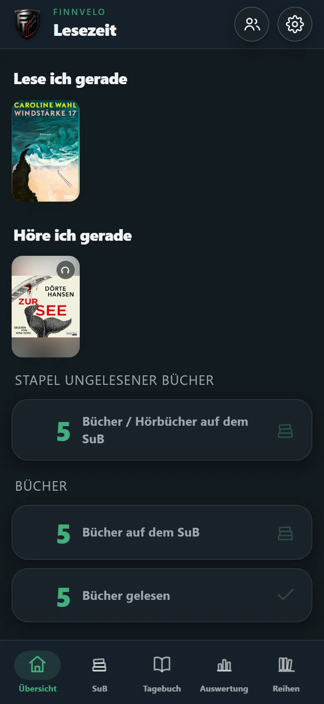
Einstellungen – das kannst du anpassen
Ab Werk ist Lesezeit schlicht gehalten. Vieles, was nicht jeder braucht, schaltest du in den Einstellungen dazu. Ein Überblick über alles, was sich einstellen lässt:
Aussehen
- ErscheinungsbildHell, Dunkel oder wie das Gerät.
- Farben und Hintergrund30 Motive, eine Farbfläche oder ein eigenes Bild, wahlweise das ganze Motiv zeigen. Farbräder für Hintergrund, Menüband und Schrift, alles zurücksetzbar.
- Seiten umblätternWie im Buch, mit Kapitelblatt. Ausgeschaltet schieben sich die Seiten nur.
- Seite „Reihen“ zeigenSchaltet die fünfte Seite mit allen Buchreihen dazu – Band für Band mit Cover und Stand.
- ListenansichtKnopf zum Umschalten zwischen Covern und einer Liste mit Titel, Verfasser und Jahr.
Bedienung
- Würfel rolltVor dem Vorschlag rollt zwei Sekunden lang ein Würfel. Ausgeschaltet erscheint das Buch sofort.
- Plus-Knopf und Würfel obenAb Werk sitzen beide unten rechts, wahlweise oben in der Kopfleiste.
- Ordnen-KnopfTrichter in der Kopfleiste: ordnet SuB und Tagebuch nach Reihe, Genre, Autor, Verlag, Format oder Jahr.
- Suche im BestandLupe in der Leiste: sucht über Titel, Verfasser, Verlag, Reihe, Genre, Sprecher und ISBN.
- Vorschläge beim TippenZeigt schon beim Eintippen passende Bücher samt Cover.
- Kamera für die ISBNKamerasymbol im ISBN-Feld zum Einlesen des Strichcodes.
Suche und Quellen
- Sprache der SucheTreffer werden nach Sprache gefiltert. Weitere Sprachen lassen sich mit ihrem Katalogcode ergänzen.
- QuellenverzeichnisSieben eingebaute Quellen, jede einzeln abschaltbar. Eigene Bibliothekskataloge lassen sich dazu anlegen.
- Klappentexte selbst nachholenFragt im Hintergrund bei den Buchdiensten nach, wenn einem Buch der Klappentext fehlt.
- Klappentexte und Cover nachholenDasselbe auf Knopfdruck für den ganzen Bestand.
Verzeichnisse und Auswertung
- Gemerkte Autoren und VerlageNamen, die beim Anlegen sofort bereitstehen – anlegen und löschen.
- Buchreihen und GenresAnlegen, umbenennen und löschen. Änderungen gelten für alle Bücher, die daran hängen.
- Abgebrochene Bücher anzeigenEine eigene Reihe in der Auswertung.
Daten
- Vor dem Löschen nachfragenSchützt davor, ein Buch aus Versehen wegzuwerfen.
- PapierkorbGelöschtes bleibt 14 Tage liegen und lässt sich zurückholen.
- Sicherung erstellen und einlesenDer ganze Bestand samt Covern in einer Datei – zum Aufbewahren oder Verschicken. Einlesen ersetzt den Bestand erst nach Rückfrage.
Begrüßung, Aktualisierung und Hilfe
- Wie soll die App dich nennen?Ein Name oder Spitzname für die Begrüßung.
- Beim Öffnen begrüßenEin kurzer Willkommensgruß nach dem Startbild.
- Nach neuer Fassung sehenFragt beim Öffnen auf finnveloprogramme.com nach. Abgeschaltet bleibt die Prüfung von Hand.
- Fehler meldenEin Bericht mit Fassung, Gerät und den letzten Fehlern – ohne Buchtitel und Notizen.
- DatenschutzZeigt genau, was auf dem Gerät bleibt und was bei einer Suche wohin geht.
Besondere Vorteile
- Kein Konto, keine Anmeldung, keine Werbung
- Alle Daten bleiben auf dem Gerät – die App holt nur, sie sendet nie
- Suche in sieben Quellen gleichzeitig und ISBN-Scan per Kamera
- Bücher und Hörbücher getrennt ausgewertet
- Papierkorb und Sicherung – nichts geht versehentlich verloren
- SuB-Abbau-Challenge und Zufallswürfel gegen den wachsenden Stapel
- Buchreihen Band für Band, fehlende Bände sofort sichtbar
- Ausländische Quellen abschaltbar – dann verlässt kein Suchwort die EU
- Ab Werk schlicht, alles Weitere nach Wunsch zuschaltbar
Zielgruppe
Für alle, die gern lesen oder hören und den Überblick behalten wollen – über den Stapel, der noch wartet, und alles, was schon gelesen ist –, ohne dass daraus eine Verwaltungsaufgabe wird.
- Vielleserinnen und Vielleser, deren SuB schneller wächst als er schrumpft – Challenge und Würfel helfen beim Abbauen.
- Wer Reihen liest und wissen will, welcher Band als Nächstes dran ist oder noch fehlt.
- Hörbuchfans, die Gehörtes genauso festhalten wollen wie Gelesenes – auch aus der Onleihe.
- Alle, die ein Lesetagebuch ohne Konto, Cloud und Werbung suchen.
Daten und Datenschutz
Dein Lesetagebuch bleibt auf dem Handy. Es gibt kein Konto, keine Anmeldung und keinen Server, auf dem deine Bücher liegen – die App holt nur, sie sendet nie. Keine Werbung, keine Zählpixel, keine Nutzungsauswertung.
Seit Fassung 1.3 liegt dein Bestand als eigene Datei im Datenordner der App, dazu bis zu zwanzig Sicherungen: vor jedem Update, am Monatsersten und auf Knopfdruck. Beim ersten Start von 1.3 zieht die App deine Bücher von selbst um und legt vorher eine Sicherung an.
Ins Netz geht die App nur, wenn du suchst – dann gehen deine Suchbegriffe an die Quellen, die du angeschaltet hast –, wenn sie fehlende Klappentexte oder Cover nachholt, und beim Öffnen für die Frage nach einer neuen Fassung. Cover werden einmal geholt, verkleinert und in der App abgelegt.
Tagebucheinträge, Bewertungen, Lesezeiten, dein Spitzname und die Zusammenstellung deines Bestandes verlassen das Gerät nie. Jede Quelle, die Aktualisierung und das Nachholen von Klappentexten lassen sich einzeln abschalten.
Tutorial-Video
Ein Tutorial-Video wird hier ergänzt, sobald es bereitsteht.
Download (Android-App)
App herunterladen
Da die App nicht über den Play Store verteilt wird, muss Android beim Öffnen der Datei einmalig die Installation aus unbekannter Quelle erlauben.
Android-App herunterladenWeitere Versionen und Patches
Platzhalter für spätere Updates, Patchdateien und ältere Versionen.
Download (PC-Version)
Programm herunterladen
Die Fassung für Windows. Sie läuft eigenständig, eine Installation ist nicht nötig.
PC-Version herunterladenHinweis
Windows meldet bei unbekannten Programmen einen Warnhinweis. Über „Weitere Informationen“ → „Trotzdem ausführen“ lässt sich der Start fortsetzen.